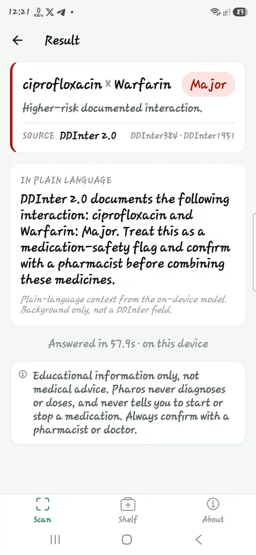

Evidence
Run evidence, not hand-waving.
Pharos has a short proof chain: deterministic grounding tests, real QVAC OCR and MedPsy inference, a non-debuggable final APK, and physical S25 Ultra validation.
Final APK
pharos-s25-cbc1d1f-final.apk is published under the apk-pr30-final release.
S25 Ultra
Final smoke and Major-interaction validation were captured on the Android device.
QVAC 0.12.2
The app packages Tether QVAC for OCR and MedPsy inference through the React Native path.
38/38 checks
The deterministic suite covers normalization, DDInter lookup, abstain, audit, and resource logging.
Verified fact
The model explains a retrieved interaction.
- DDInter 2.0 provides the drug-drug interaction fact and severity.
- The model does not decide from memory whether a medication is safe.
- Unknown or unverifiable labels take the abstain path.
- Medical wording stays inside an educational warning boundary.

Stack
Built around QVAC, not bolted on.
The technical claim is specific: QVAC handles OCR and MedPsy completion on-device, while DDInter grounding keeps the medical fact source explicit.
Phone app
React Native via Expo SDK 54 / RN 0.81 with expo-camera, expo-sqlite, expo-secure-store, and Hermes.
Inference
@qvac/sdk@0.12.2 runs OCR and MedPsy completion through the native runtime path. Mesh delegation uses the QVAC/Holepunch peer path.
Data
DDInter 2.0 is bundled as an offline SQLite database keyed by normalized generic drug names and provenance IDs.
Audit trail
The repo includes reproducibility docs, an audit-log schema, S25 validation notes, and the final APK checksum.
Reproduce
Three proof levels.
Judges can inspect the repo without trusting the website copy. The website’s job is to route them quickly to what has already been run.